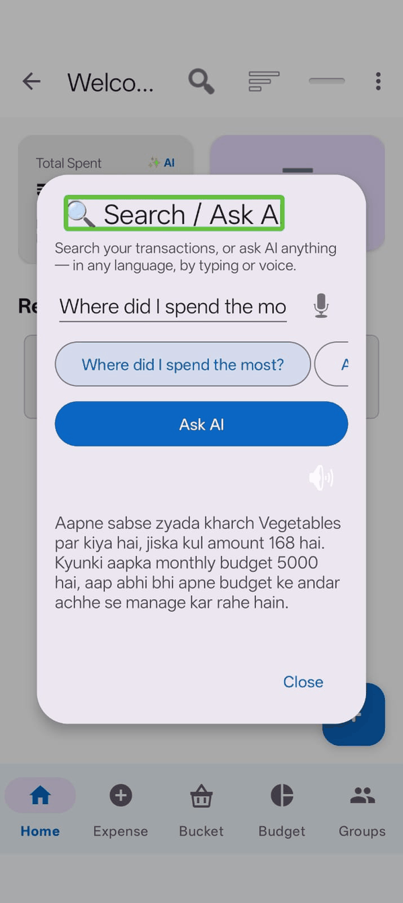
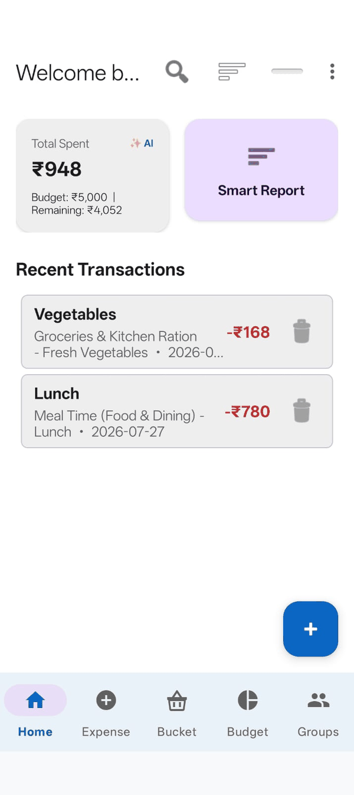
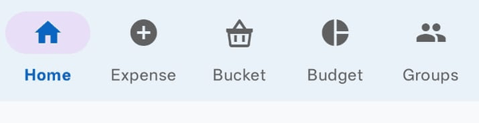
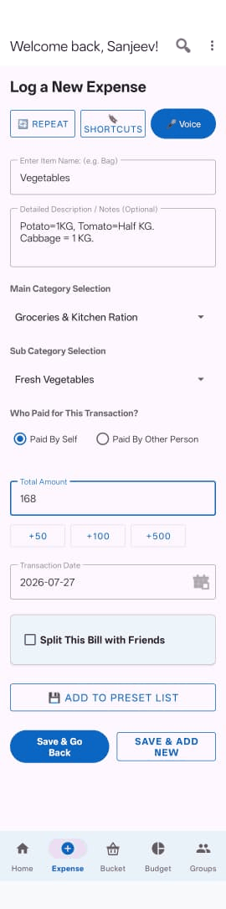

1. Signing in

You need an account so your data can be backed up and so you can share expenses with other people. There are two ways in:
- Sign in with Google — the quickest option.
- Sign in with Phone Number — enter your number with the country code (for example +919876543210), then the six-digit code sent to you by SMS.
Before signing in you'll need to tick the box agreeing to the Privacy Policy and Terms. Both are linked directly beneath it if you'd like to read them first.
2. Setting up your profile
The first time you sign in, Spendify asks for a few details:
- Name — required. This is what other members see in a group.
- Gender and Date of Birth — optional.
- UPI ID — optional, and only used so people in your groups can pay you back.
You can change any of this later from the menu, under Settings.
3. Finding your way around


Five tabs run along the bottom of the screen:
| Tab | What it's for |
|---|---|
| Home | Recent expenses, your totals, and AI summaries. |
| Expense | Adding something you spent. |
| Bucket | Things you're saving towards. |
| Budget | Your limit and how much is left. |
| Groups | Shared expenses with other people. |
At the top right there's a search icon and a menu (three dots). The menu holds everything that isn't a tab — history, settings, export, help and so on.
4. Adding your first expense

- Tap the Expense tab.
- Type what you bought in Item Name — for example "Groceries".
- Enter the Amount.
- Pick a Category and Subcategory. As you type the item name, the app often suggests these for you.
- Tap Save Expense.
In a hurry? Tap the microphone button instead and just say it — "spent five hundred on groceries". Spendify works out the amount and category for you. See AI Features.
5. Setting a budget
A budget is what turns Spendify from a list of expenses into something that tells you where you stand.
- Tap the Budget tab.
- Choose a cycle — Monthly is the usual choice.
- Enter your limit.
- Tap Save Budget Limit.
The screen then shows how much you've spent, how much is left, and a Safe to Spend Today figure — your remaining money divided by the days left in the cycle.
6. Turning on backup
Do this early. Without backup, your expenses live only on this phone. If you lose it or reinstall the app, they're gone.
Open the menu, go to Settings, and turn on Auto Online Backup under Data & Cloud Backup. Your expenses and budget history are then copied to your account, and you can restore them on a new phone.
What next
- Adding Expenses — voice entry, splitting bills, recurring bills
- Groups — sharing expenses with other people
- Settings & Accessibility — text size, dark mode, app lock